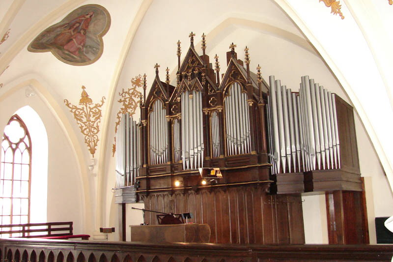
Varhany ve farním kostele sv. Kateřiny Alexandrijské
v Dolnom Kubíne byly původně jednomanuálové s pedálem, rozdělené na hlavní
stroj a malý pozitiv před hracím stolem, umístěný v zábradlí kůru (pravděpodobně
s částí principálu v prospektu a Kornetem). Rok postavení původních varhan
je zatím neznámý. Jeho dispozice byla následující: |
Dispozice původních varhan: |
| I. Manuál | Pedál | Spojky | |||||
| Bourdon | 16' | Kontrabas | 16' | I/I | 4' | ||
| Principál | 8' | Subbas | 16' | I/P | 8' | ||
| Kryt | 8' | Violónbas | 8' | ||||
| Salicionál | 8' | Chorálbas | 4' | ||||
| Oktáva | 4' | ||||||
| Flauta trubicová | 4' | ||||||
| Piccola | 2' | ||||||
| Korneta 3x | 22/3' | ||||||
| Doublette | 11/3' | ||||||
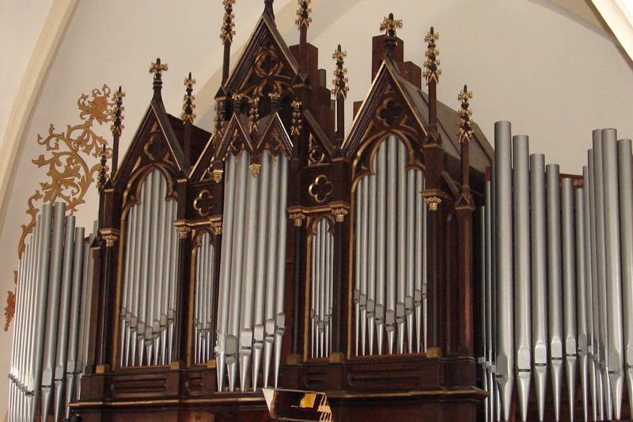
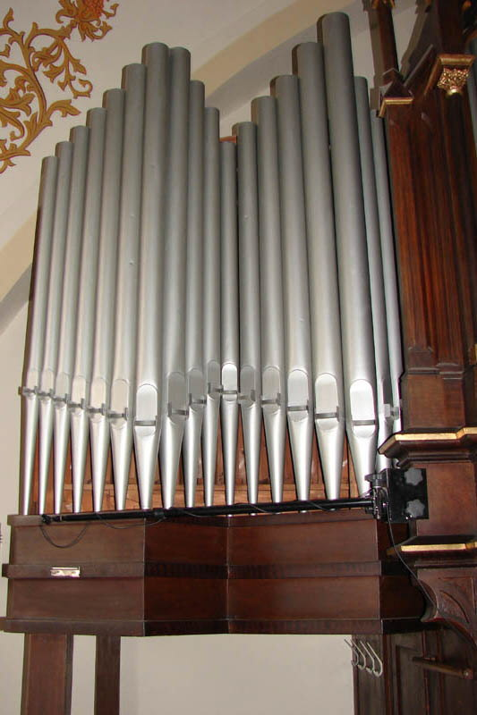Při
rekonstrukci a rozšíření kůru kostela v roce 1948 varhany přestavěla a
podstatně rozšířila firma Tuček z Kutné Hory pod opusovým číslem 501.
Zachována zůstala kompletní dispozice původních varhan (dnes první manuál
a pedál), byl odstraněn pozitiv v zábradlí a po bocích varhanní skříně
přistavěny žaluziové skříně druhého manuálu. |
Dispozice varhan po přestavbě v
roce 1948: |
| I. Manuál | II. Manuál | Pedál | |||||
| Bourdon * | 16' | Flauta maior | 8' | Kontrabas | 16' | ||
| Principál | 8' | Kvintadena | 8' | Subbas | 16' | ||
| Kryt | 8' | Vox angel | 8' | Echobas *** | 16' | ||
| Salicionál | 8' | Principál italský | 4' | Violónbas | 8' | ||
| Oktáva | 4' | Flauta dulcian | 4' | Chorálbas | 4' | ||
| Flauta trubicová | 4' | Roh kamzičí | 22/3' | ||||
| Piccola | 2' | Roh nočný | 2' | ||||
| Korneta 3x | 22/3' | Mixtura 4x ** | 11/3' | ||||
| Doublette | 11/3' | ||||||
| Spojky | |||||||
| I/I | 4' | II/II | 4' | I/P | 8' | ||
| II/I | 8' | II/II | 16' | II/P | 8' | ||
| II/I | 4' | II/P | 4' | ||||
| II/I | 16' | ||||||
| Pomocná zařízení | |||||||
| žaluzie II. man. | PP, P, MF, F | anulátor pedálu | |||||
| dvě volné kombinace A+B | Pleno | vypínač VK a K | |||||
| crescendo válec | |||||||
* extenze Krytu 8', přidáno 12 píšťal dolní oktávy ** C-h dvouřadá, dále čtyřřadá Mixtura *** Používá píšťaly Subbasu 16' s druhým - slabším přívodem vzduchu |
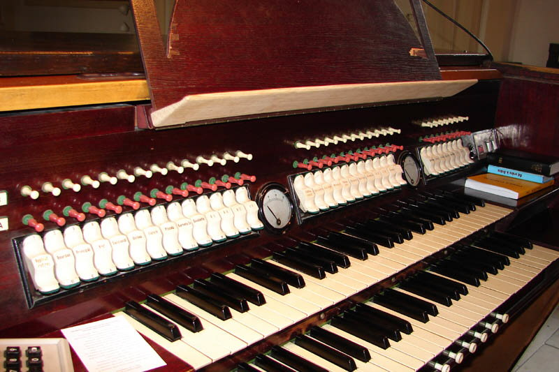
Hlava hracího stolu. 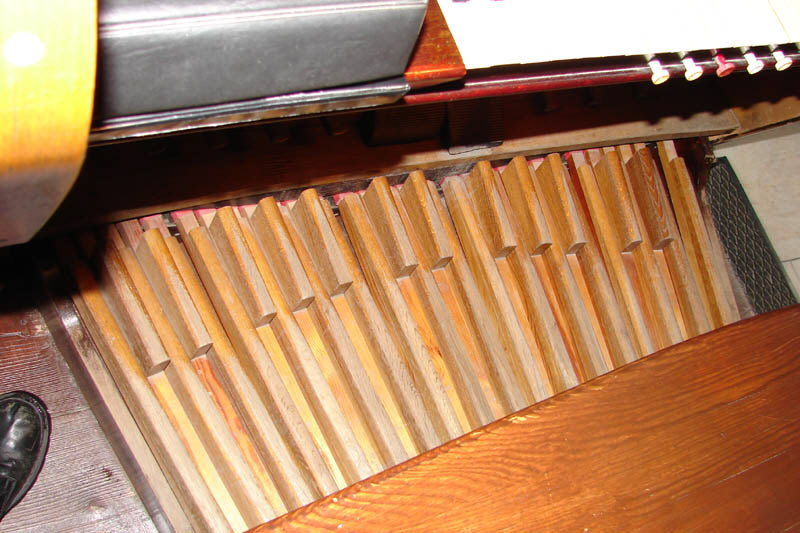Traktura nástroje je pneumatická, tlaková, vzdušnice kuželkové, dělené na C a Cis stranu. V nástroji je 27 řad s celkem 1372 píšťalami (Kontrabas 16' je vystavěný otevřený rejstřík). Manuály mají 56 kláves (C-g4), pedál 30 tónů (C-f1). Pedálnice je německého typu s radiálními klávesami. Ovládání rejstříků je řešeno pomocí sklopek, volné kombinace se volí pomocí tahélek nad sklopkami v hlavě hracího stolu, zapínání volných kombinací a kolektivů je řešeno pomocí tlačítek pod prvním manuálem, ovládaní žaluzií balanční šlapkou nad prahem pedálu vedle válce crescenda. Pomocí pistonů nad pedály lze ovládat anulátor pedálu, vypínače spojek (8', 4', 16'), volné kombinace A a B a Pléno. V hlavě hracího stolu mezi sklopkami pro první a druhý manuál je ukazatel crescenda a mezi sklopkami druhého manuálu a pedálu ukazatel nastavení žaluzií. Nástroj je v poměrně dobrém stavu (tlakové pneumatické systémy patří k velmi spolehlivým, jejich životnost při průběžné údržbě a stabilním prostředí přesahuje 50 let). Nectností pneumatiky u rozlehlých nástrojů je jen značné zpoždění ozevu po stisku klávesy (ve srovnání s mechanikou či elektrikou). 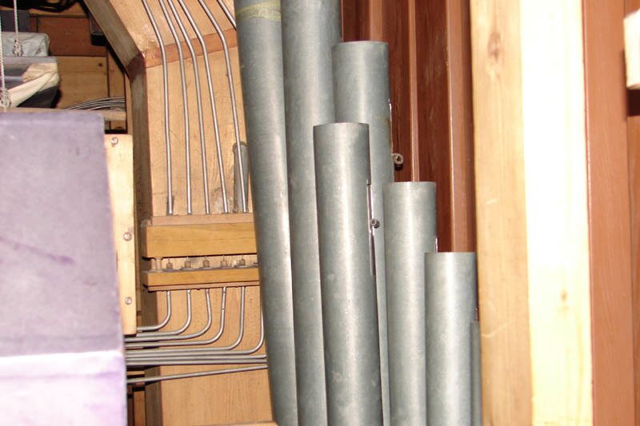 Rejstříkové mezirelé na vzduchovodu. Velkou chybou při přestavbě nástroje bylo odstranění visutého pozitivu (odpovídá to ale dobovým zvyklostem, pozitivy zmizely prakticky ze všech kostelů, u kterých se v té době prováděla přestavba nástroje, v lepším případě byly zachovány jako dekorace, v horším se nenávratně ztratily). Problematické je také disponování značného počtu spojek ve více polohách, zvuk nástroje v Plénu je tak zbytečně silný až uvřískaný (je nutné vypnout alespoň sub a superspojky II/I, pak je pléno plné bez zbytečně silných zvuků). |
Kondukty, přivádějící vzduch k prospektovým píšťalám. |
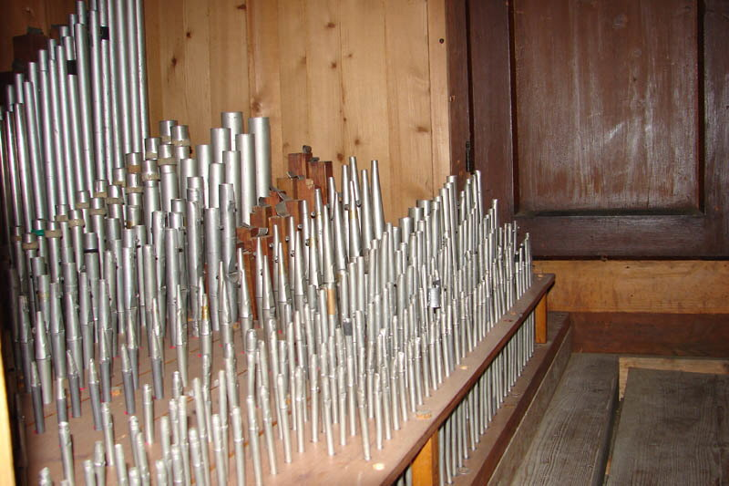 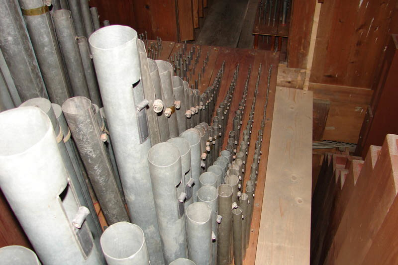
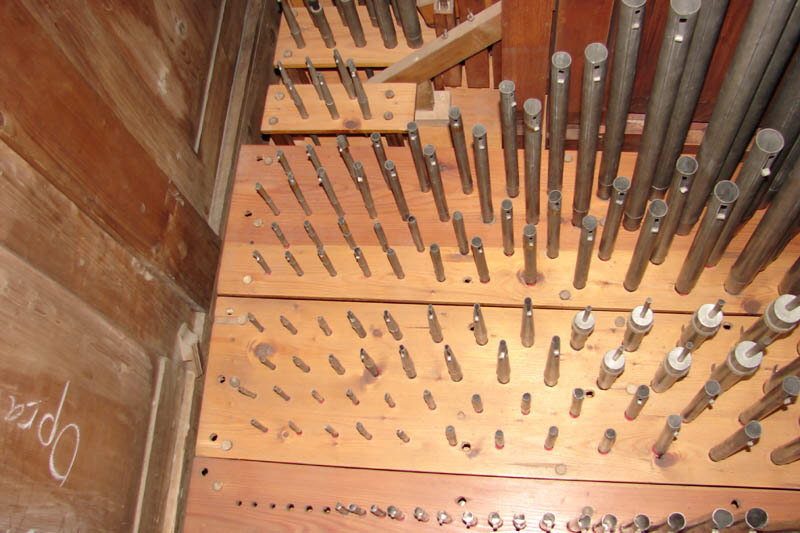 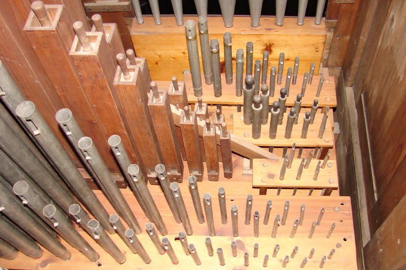
Pohledy do píšťaliště nástroje. |
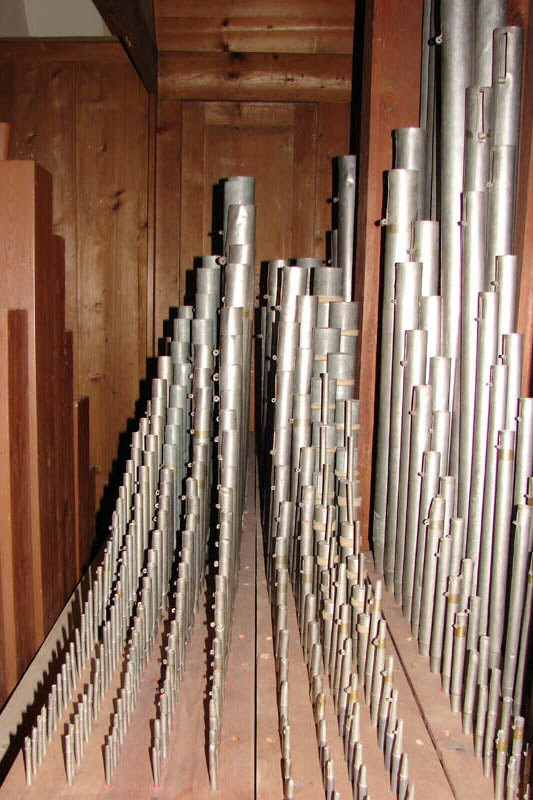
Pohledy do píšťaliště I. manuálu a C strana přistavěné
části II. manuálu. |
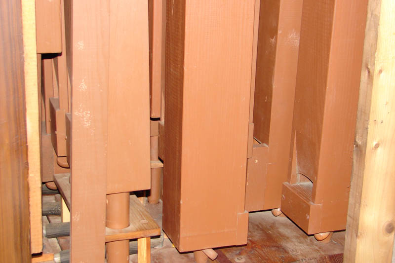
Dřevěné píšťaly pedálového stroje s intonačními
kolíky v noze. |
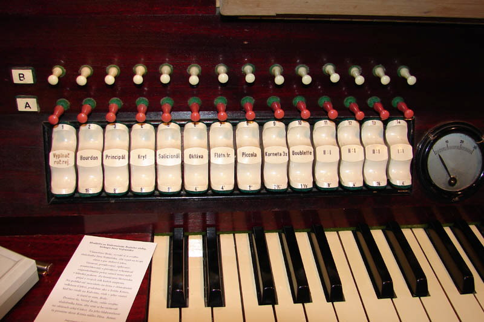
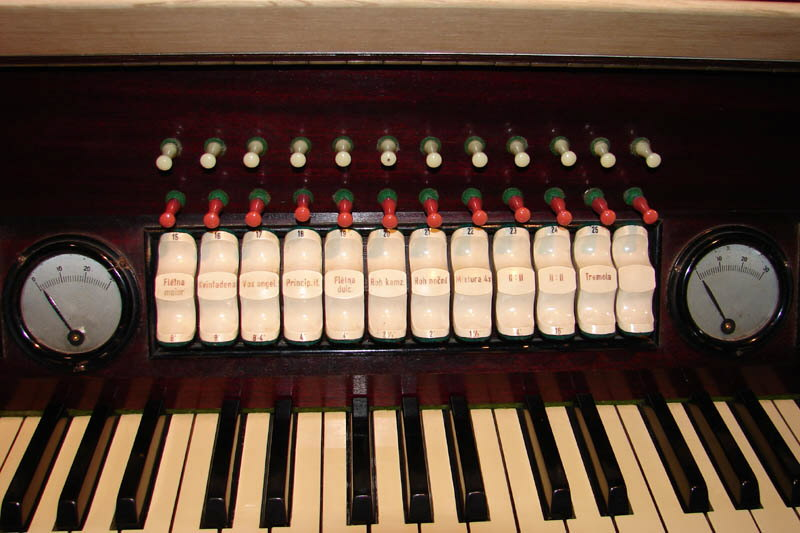
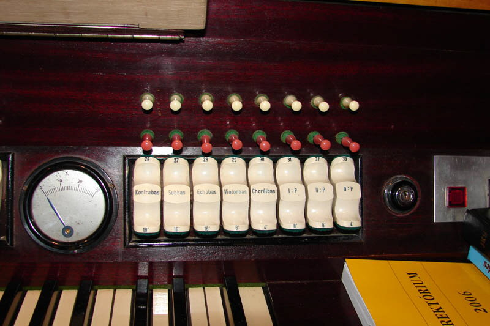
Detailní pohledy na sklopky v hlavě hracího stolu. |
| Autor stránek děkuje panu Martinovi Behulovi , varhaníkovi z Dolného Kubína za poskytnutí fotografií a textových podkladů pro tuto stránku. |